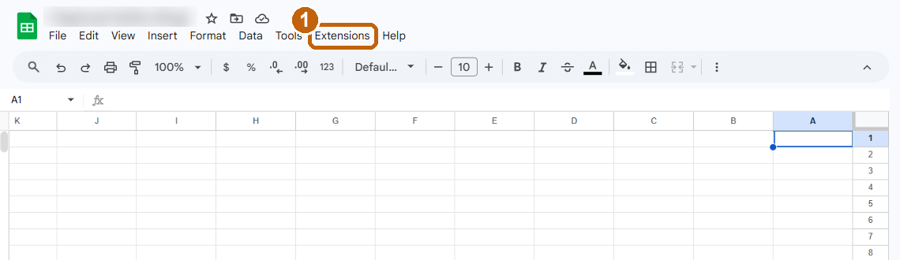
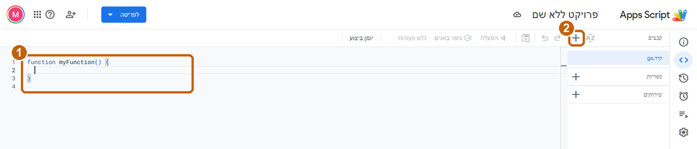
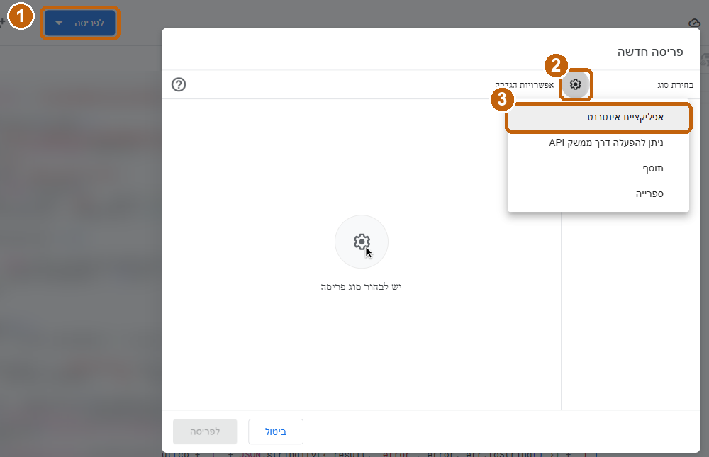
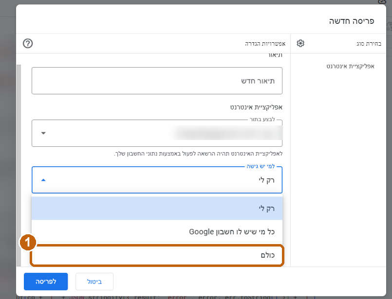
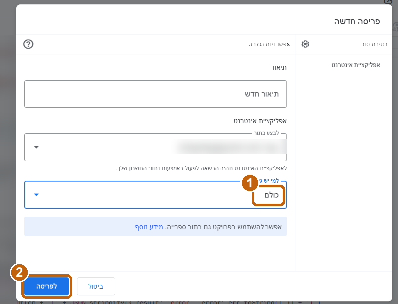
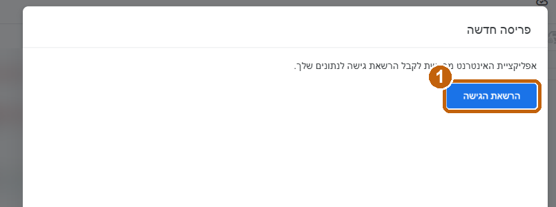
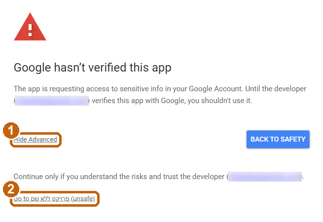
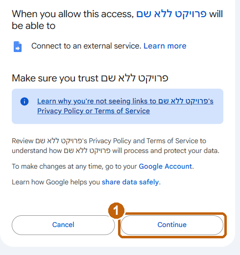
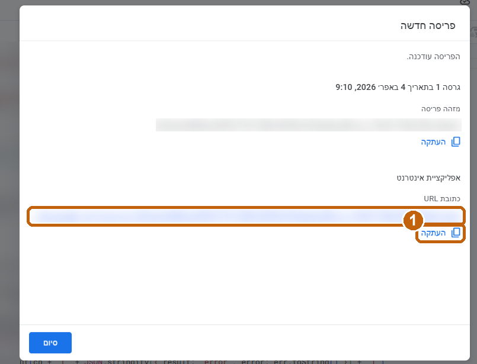

מפגש 1 · מסלול ההובלה · צעד 5. בחשבון ג'ימייל פרטי וב-Gemini החינמי. כ-25 דקות.
התוצר: קישור לשאלון על האתגר שהבאתם מבית הספר, שבו כל תשובה נכנסת לגיליון שלכם. שולחים אותו כבר מחר.
נכנסים ל-sheets.new ונותנים לו שם, למשל "משוב הדרכה". משאירים את הגיליון ריק.
בתפריט של הגיליון: Extensions (בעברית: תוספים) ← Apps Script. נפתח עורך עם קובץ Code.gs ריק.

ב-gemini.google.com מדביקים את הפרומפט:
האתגר שלכםבפרומפט יש דוגמה: משוב אחרי הדרכה. מחליפים את המשפט הראשון באתגר שהבאתם, ואת שלוש השאלות בשאלות שיעזרו להבין אותו. כותבים גם למי השאלון מיועד: צוות, מנהל/ת, תלמידים או הורים. כל השאר נשאר אותו דבר.

שומרים: Ctrl+S, או אייקון הדיסקט בסרגל.
זה החלק הארוך. הולכים לפי התמונות, לפי הסדר.
א. בוחרים סוג פריסה

ב. מי יכול לפתוח: כולם


ג. מאשרים גישה (רק בפעם הראשונה)

עכשיו מגיע מסך באנגלית שנראה מפחיד. זה תקין: גוגל מזהיר על כל קוד שלא עבר בדיקה שלו, וזה הקוד שלכם.


ד. מעתיקים את הקישור

פותחים את הקישור בטלפון וממלאים. אם בגיליון נוספה שורה, זה עובד. זו גרסה 1.
| מה רואים | מה עושים |
|---|---|
| "Google hasn't verified this app" / "גוגל לא אימתה את האפליקציה" | Advanced / מתקדם ← Go to … (unsafe) ← Continue. זה הקוד שלך, והגישה רק לגיליון שלך. התמונות בצעד 5, חלק ג. |
| אין אפשרות "כל אחד" ב"למי יש גישה", או שההרשאה נחסמת | חשבון בית ספרי שמנוהל על ידי ארגון. עוברים לג'ימייל פרטי. |
| שגיאה בהרצה, או שהשאלון נשלח ושום שורה לא נוספת | מעתיקים את הודעת השגיאה המלאה ל-Gemini: "קיבלתי את השגיאה הזאת, מה לתקן?". מדביקים את התיקון ושומרים. |
| תיקנתי את הקוד, והקישור עדיין מציג את הגרסה הישנה | פריסה ← ניהול פריסות ← עריכה (עיפרון) ← גרסה: חדשה ← פריסה. כך הקישור נשאר אותו קישור. "פריסה חדשה" יוצרת קישור חדש. |
| הדף עולה בלי עיצוב או משמאל לימין | מבקשים מ-Gemini: "הוסף dir=rtl ו-meta viewport לקובץ Index.html". |
עם דוגמהמדביקים את הפרומפט כמו שהוא. המטרה: קישור שעובד.
לבדכותבים פרומפט משלכם, עם שאלות ונושא משלכם.
עוד צעדאחרי שזה עובד, ממשיכים עם הפרומפט הבא:
קוד שנבדק תחבירית. כך נראה בערך מה ש-Gemini אמור לתת.
Code.gs
// מציג את השאלון
function doGet() {
return HtmlService.createHtmlOutputFromFile('Index')
.setTitle('משוב על ההדרכה')
.addMetaTag('viewport', 'width=device-width, initial-scale=1');
}
// שומר תשובה כשורה חדשה בגיליון
function saveAnswer(a) {
var sh = SpreadsheetApp.getActiveSpreadsheet().getSheets()[0];
if (sh.getLastRow() === 0) {
sh.appendRow(['תאריך', 'שימושיות (1-5)', 'מה אנסה השבוע', 'הדרכה הבאה']);
}
sh.appendRow([new Date(), Number(a.useful), a.next, a.topic]);
return true;
}
Index.html
<!DOCTYPE html>
<html dir="rtl" lang="he">
<head>
<base target="_top">
<style>
body{font-family:Arial,sans-serif;max-width:480px;margin:auto;padding:16px}
label{display:block;margin-top:16px;font-weight:bold}
textarea,select{width:100%;padding:8px;font-size:16px;box-sizing:border-box}
.scale button{width:18%;padding:10px 0;font-size:18px}
.scale button.on{background:#2f6fdb;color:#fff}
#send{margin-top:20px;width:100%;padding:12px;font-size:18px}
</style>
</head>
<body>
<h2>משוב על ההדרכה</h2>
<div id="form">
<label>עד כמה ההדרכה הייתה שימושית לך?</label>
<div class="scale" id="scale"></div>
<label for="next">מה תנסה/י כבר השבוע?</label>
<textarea id="next" rows="3"></textarea>
<label for="topic">על מה היית רוצה הדרכה הבאה?</label>
<select id="topic">
<option>כלי AI לכתיבה</option>
<option>בדיקת עבודות</option>
<option>הכנת חומרי למידה</option>
<option>אחר</option>
</select>
<button id="send">שליחה</button>
</div>
<p id="thanks" hidden>תודה! התשובה נשמרה.</p>
<script>
var useful = 0, box = document.getElementById('scale');
for (var i = 1; i <= 5; i++) {
var b = document.createElement('button');
b.textContent = i;
b.onclick = (function (n, el) { return function () {
useful = n;
box.querySelectorAll('button').forEach(function (x) { x.className = ''; });
el.className = 'on';
}; })(i, b);
box.appendChild(b);
}
document.getElementById('send').onclick = function () {
if (!useful) { alert('נא לבחור דירוג'); return; }
this.disabled = true;
google.script.run
.withSuccessHandler(function () {
document.getElementById('form').hidden = true;
document.getElementById('thanks').hidden = false;
})
.withFailureHandler(function (e) { alert('שגיאה: ' + e.message); })
.saveAnswer({
useful: useful,
next: document.getElementById('next').value,
topic: document.getElementById('topic').value
});
};
</script>
</body>
</html>